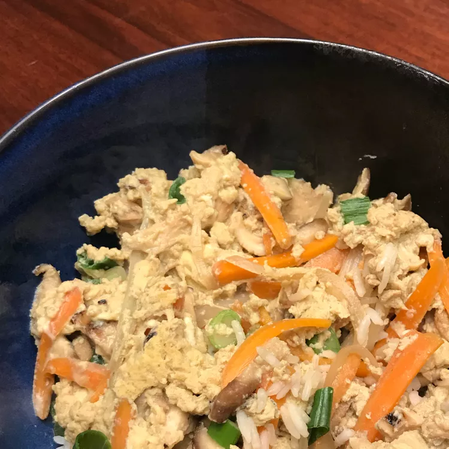

Home
Oyako Donburi

Description
This is a popular (at least in Hawaii) Japanese dish which is often served at restaurants in individual bowls. Oyako means mother and child, hence the main ingredients, chicken and eggs.
Ingredients
- 1 tablespoon vegetable oil
- ¾ pound skinless, boneless chicken breast halves - cut into strips
- ½ onion, thinly sliced
- 1 cup chicken broth
- 6 dried shiitake mushrooms, soaked until soft, then sliced into strips
- 1 carrot, julienned
- 2 tablespoons white sugar
- 4 tablespoons soy sauce
- ½ teaspoon salt
- ½ cup chopped green onions
- 5 eggs, beaten
Steps
- Heat oil in a large skillet over medium-high heat. Saute chicken strips and onion until the chicken is cooked through, about 5 to 7 minutes. Drain off as much liquid as possible.
- Stir in the chicken broth, and simmer for 2 minutes. Add the mushrooms and carrot, and let simmer for a few minutes before stirring in the sugar, soy sauce and salt. Simmer for 3 more minutes. Sprinkle in half of the green onions, stirring gently. Pour beaten eggs over the chicken mixture, and simmer until the eggs are cooked through, about 10 minutes. Serve over Japanese sticky rice.